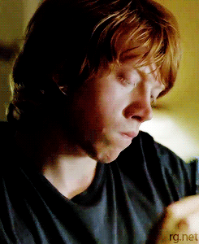
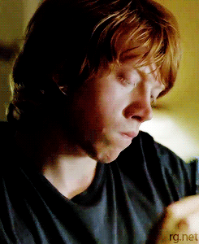
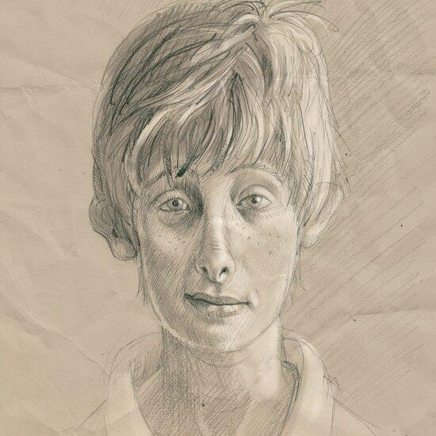
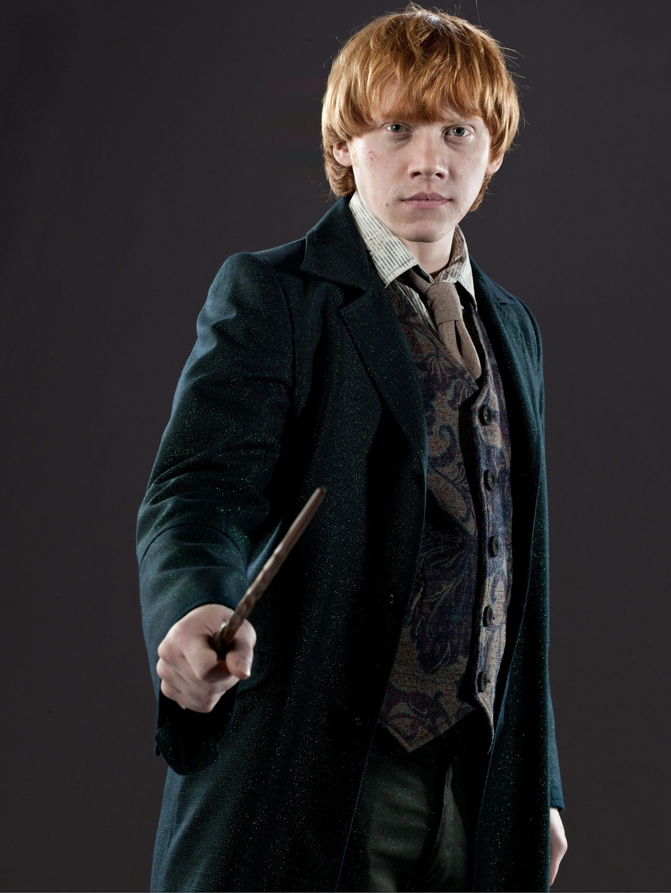
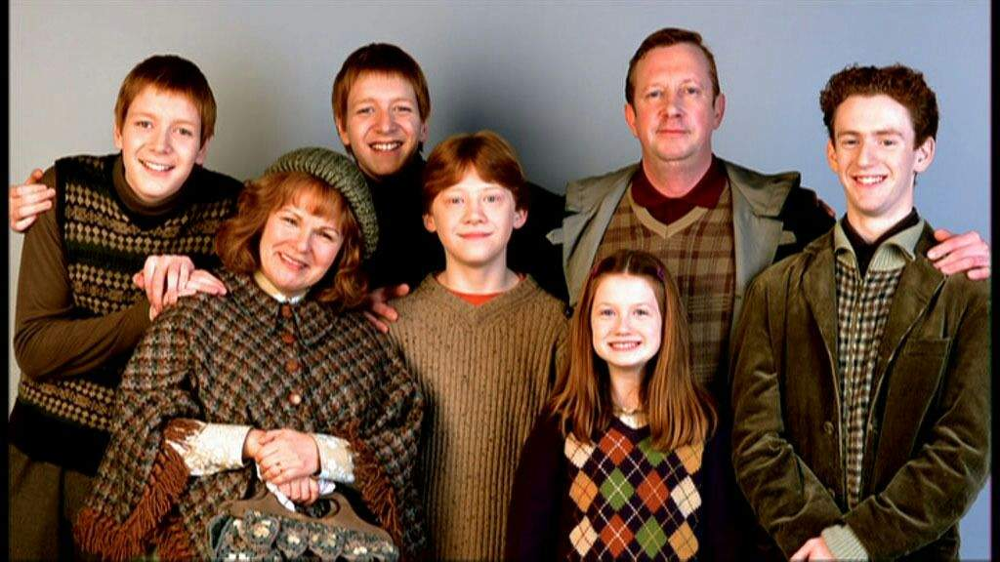
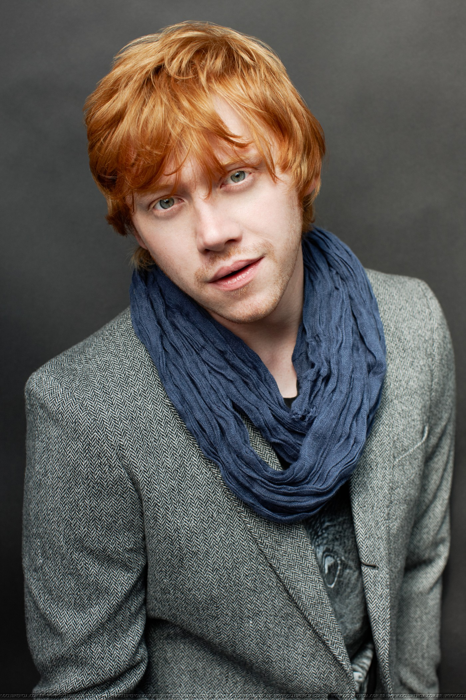
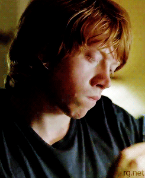
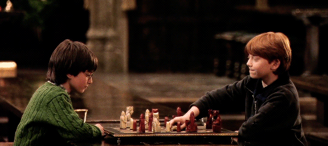
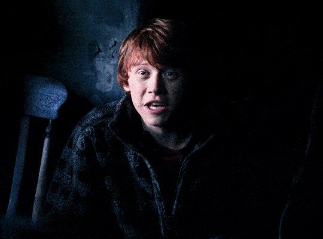
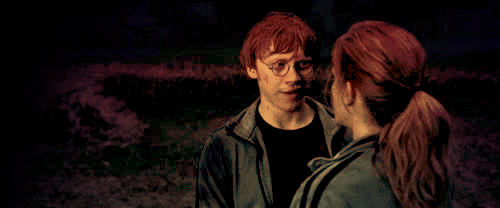

 

Ronald Bilius Weasley, más conocido como Ron Weasley, es uno de los principales personajes de la saga Harry Potter. Es el mejor amigo del protagonista y de Hermione Granger. Creado por la británica J. K. Rowling, Ron apareció por primera vez en Harry Potter y la piedra filosofal (1997), y es descrito como un chico pelirrojo alto y delgado, con manos y pies grandes y una cara cubierta de pecas. Tiene, además, ojos azules y una larga nariz. En la gran pantalla ha sido interpretado, a lo largo de diez años, por el actor Rupert Grint.
Asistió a su primer curso en Hogwarts, donde conoce a Harry y Hermione, y ayuda a Harry a salvar la Piedra Filosofal, probando su ingenio en el Ajedrez Mágico gigante. Los años siguientes permanece muy unido a sus dos amigos, Harry y Hermione, por diversos peligros que surgen en Hogwarts y fuera de él. Probablemente una de las mayores aventuras con sus amigos es en la que se embarcan en busca de los Horrocruxes de Voldemort y los cuales consiguen destruir. También participó en la batalla final de Hogwarts, donde perdió a uno de sus hermanos.
Caracterización
Personalidad
Es un personaje que se caracteriza por ser fiel, honrado, astuto, prudente, divertido, celoso, bromista, rebelde, sarcástico, algo cascarrabias… pero ante todo amigo de sus amigos.
Le encanta el ajedrez, el Quidditch, las bromas y estar con Harry y Hermione. Detesta las arañas, a algunos Slytherin (por ejemplo Draco Malfoy), la ropa de segunda mano que tiene que ponerse y que Hermione le corrija.
Se le da bien el ajedrez mágico y la estrategia, cuidar de los demás (aunque a veces sobreprotege a Ginny), imitar voces y acentos y volar en escoba. En situaciones de tensión mantiene la calma y demuestra rápidos reflejos, así como capacidad para el pensamiento lateral. Peca de celoso y es muy inseguro debido a los méritos acumulados por sus hermanos y la pobreza de su familia.
Ron es muy optimista y hasta cierto punto despreocupado, aunque a veces le cuesta sobrellevar el hecho de que su familia no tenga mucho dinero. Esto hace que muchas de sus cosas estén usadas y viejas, ya que las hereda de sus hermanos mayores, y que algunos alumnos de Hogwarts lo desprecien por ello, en especial Draco Malfoy y los de Slytherin.
A veces es muy inseguro de él mismo aunque en algunas ocasiones muestra más seguridad que muchos. Harry se ve obligado en su sexto año a subirle la moral antes de un partido de Quidditch, haciéndole creer que tomo una poción, "Felix Felicis" lo cual dio resultados haciendo una espectacular labor como guardián.
Muchas de sus cualidades actúan en contraposición con las de Harry. Mientras que Harry es huérfano y tiene más dinero del que necesita, Ron viene de una familia grande y que lo quiere, pero que es muy pobre. También el hecho de que Harry sea famoso ocasiona que Ron ocasionalmente sienta celos de la atención que recibe su amigo, ya que él mismo quisiera sobresalir de alguna manera. En el cuarto libro, esto ocasiona que tengan una pelea, cuando Ron piensa erróneamente que Harry siempre busca ser el centro de atención. Sus complejos de inferioridad, al ser menos destacado que sus hermanos (por no ser ni un estudiante brillante, ni un excelente jugador de Quidditch, ni el hijo que su madre siempre deseó) son la fuerza principal que lo motiva a desarrollarse a sí mismo.
Es sarcástico, celoso cuando se trata de Hermione Granger, aunque él nunca lo quiera reconocer, muy leal, digno de confianza y sobre todo buen amigo.

Familia
Es el sexto de los siete hijos de los Weasley. Es hijo de Arthur y Molly Weasley y hermano de Bill, Charlie, Percy, los gemelos Fred y George y la pequeña Ginny.
Su padre trabaja en el Ministerio de Magia, mientras que su madre es ama de casa. Bill trabaja para el banco de magos en Egipto y Charlie cría dragones en Rumanía. Percy es asistente del ministro de magia y los gemelos acaban abriendo la tienda de bromas Sortilegios Weasley. Por último, su hermana pequeña Ginny acaba siendo la capitana del equipo de Quidditch Las Arpías de Holyhead.
Pobres, pero honrados, los hermanos Weasley siempre han adquirido cosas de segunda mano, a pesar de que la tía Muriel está muy bien económicamente, pues posee una mansión en la que acaban escondiéndose de Voldemort y sus secuaces. Los abuelos paternos son Septimus Weasley y Cedrella Black, mientras que los maternos son Ignatius Prewett y Lucretia Black.
Casado con su amiga Hermione, el matrimonio tiene dos hijos: Rose y Hugo Granger-Weasley.
  